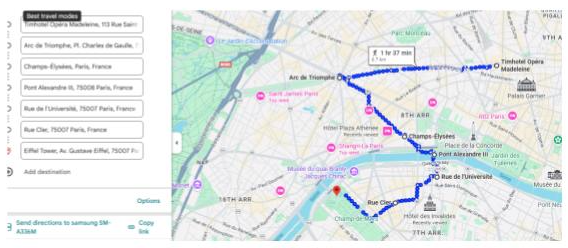

Hotel:
Teamhotel Opera Madeleine
113 Rue Saint Lazare

Ir hasta el Arco de Triunfo.
Caminar todas las tiendas de Champs-Élysées.
Pont Alexandre III:
cruzar el puente con vistas espectaculares a la
Torre Eiffel y a la fachada de
Les Invalides, donde se encuentra la tumba de Napoleón.
Rue de la Université:
ideal para sacar muy buenas fotos de la Torre Eiffel.
Rue Cler:
peatonal llena de tiendas y mercado, perfecta para pasear y comer algo.
Torre Eiffel:
visita imperdible y cierre perfecto del recorrido.